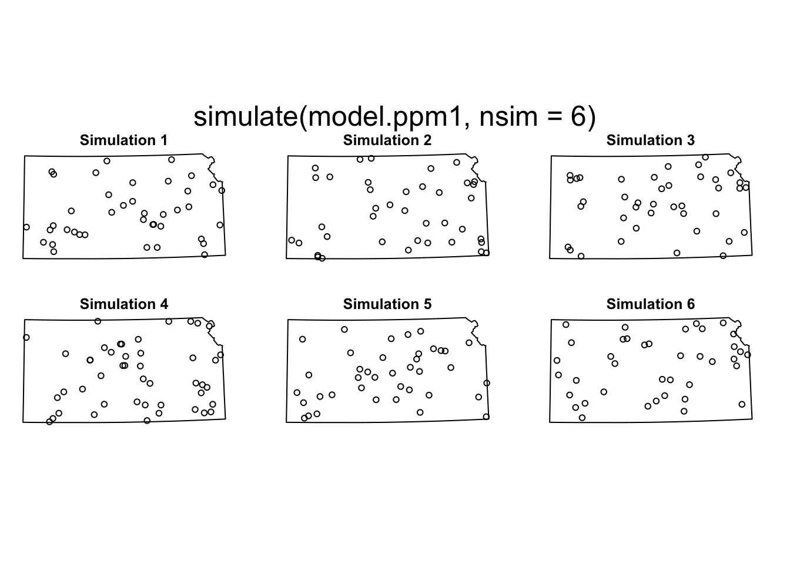
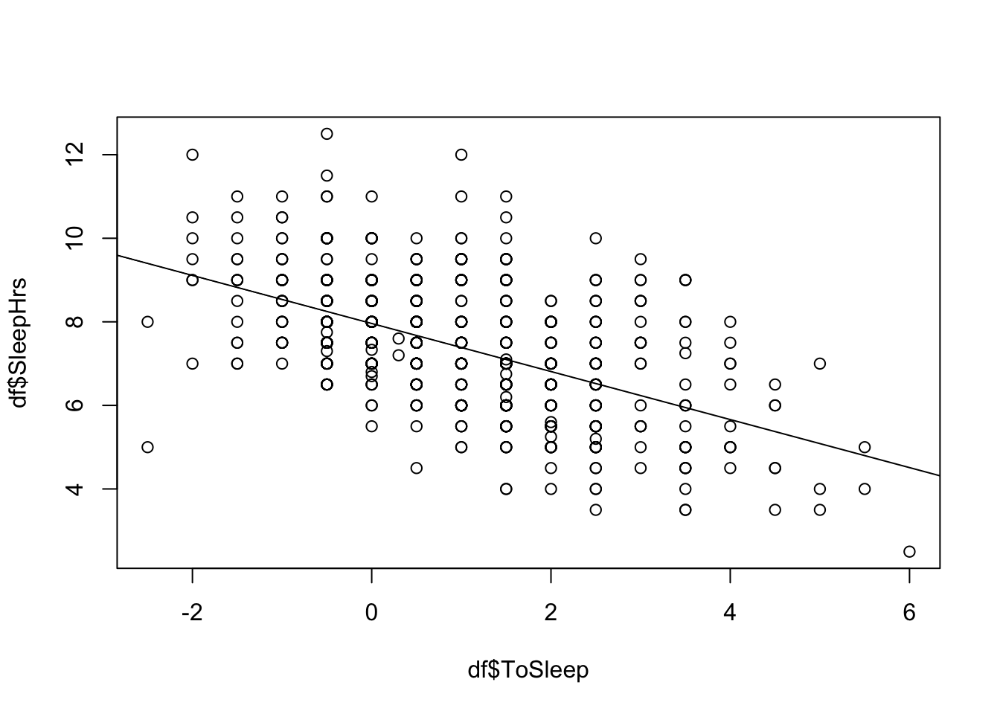

Thursday February 2, 2023
“Hell isn’t other people’s code. Hell is your own code from 3 years ago.” – Jeff Atwood
| Lab | Date | Lessons covered |
|---|---|---|
| 1 | Thursday January 26 | 1-4 |
| 2 | Thursday February 9 | 5-7 |
| 3 | Tuesday February 28 | 8-11 |
| 4 | Thursday April 6 | 12-18 |
| 5 | Thursday April 27 | 19-22 |
| Date | Lesson/Lab |
|---|---|
| January 10 | Syllabus |
| January 12 | Lesson 1 |
| January 17 | Lesson 2 |
| January 19 | Lesson 3 |
| January 24 | Lesson 4 |
| January 26 | Lab 1 |
| January 31 | Lesson 5 |
| February 2 | Lesson 6 |
| February 7 | Lesson 7 |
| February 9 | Lab 2 |
| February 14 | Lesson 8 |
| February 16 | Lesson 9 |
| February 21 | Lesson 10 |
| February 23 | Lesson 11 |
| February 28 | Lab 3 |
| March 2 | Lesson 12 |
| March 7 | Lesson 13 |
| March 9 | Lesson 14 |
| March 14 | Spring Break |
| March 16 | Spring Break |
| March 21 | Lesson 15 |
| March 23 | FREE |
| March 28 | Lesson 16 |
| March 30 | Lesson 17 |
| April 4 | Lesson 18 |
| April 6 | Lab 4 |
| April 11 | Lesson 19 |
| April 13 | Lesson 20 |
| April 18 | Lesson 21 |
| April 20 | FREE |
| April 25 | Lesson 22 |
| April 27 | Lab 5 |
Working with raster data
The raster data model divides geographic space into a grid of cells (or pixels) of constant size (resolution). A cell may have an attribute value
The {raster} package has functions for working with raster data using S4 objects (reference class). The {terra} package has functions for creating, reading, manipulating, and writing raster data using S3 objects SpatRaster and SpatVect
To see what methods (functions) for class SpatRaster are available use the methods() function
library(terra)## terra 1.7.3methods(class = "SpatRaster")## [1] ! [ [[
## [4] [[<- [<- %in%
## [7] $ $<- activeCat
## [10] activeCat<- add<- adjacent
## [13] aggregate align allNA
## [16] animate anyNA app
## [19] approximate area Arith
## [22] as.array as.bool as.character
## [25] as.contour as.data.frame as.factor
## [28] as.int as.integer as.lines
## [31] as.list as.logical as.matrix
## [34] as.numeric as.points as.polygons
## [37] as.raster atan_2 atan2
## [40] autocor barplot blocks
## [43] boundaries boxplot buffer
## [46] c catalyze categories
## [49] cats cellFromRowCol cellFromRowColCombine
## [52] cellFromXY cells cellSize
## [55] clamp_ts clamp classify
## [58] click coerce colFromCell
## [61] colFromX colorize coltab
## [64] coltab<- Compare compareGeom
## [67] concats contour costDist
## [70] costDistance cover crds
## [73] crop crosstab crs
## [76] crs<- datatype deepcopy
## [79] density depth depth<-
## [82] diff dim dim<-
## [85] direction disagg distance
## [88] droplevels expanse ext
## [91] ext<- extend extract
## [94] fillTime flip focal
## [97] focal3D focalCor focalCpp
## [100] focalPairs focalReg focalValues
## [103] freq global gridDist
## [106] gridDistance has.colors has.RGB
## [109] hasMinMax hasValues head
## [112] hist ifel image
## [115] init inMemory inset
## [118] interpIDW interpNear interpolate
## [121] intersect is.bool is.factor
## [124] is.finite is.infinite is.int
## [127] is.lonlat is.na is.nan
## [130] is.related isFALSE isTRUE
## [133] lapp layerCor levels
## [136] levels<- linearUnits lines
## [139] log Logic longnames
## [142] longnames<- makeTiles mask
## [145] match math Math
## [148] Math2 mean median
## [151] merge minmax modal
## [154] mosaic NAflag NAflag<-
## [157] names names<- ncell
## [160] ncol ncol<- nlyr
## [163] nlyr<- noNA not.na
## [166] nrow nrow<- nsrc
## [169] origin origin<- pairs
## [172] patches persp plet
## [175] plot plotRGB points
## [178] polys predict project
## [181] quantile rangeFill rapp
## [184] rast rasterize rasterizeGeom
## [187] rasterizeWin rcl readStart
## [190] readStop readValues rectify
## [193] relate rep res
## [196] res<- resample rescale
## [199] rev RGB RGB<-
## [202] roll rotate rowColCombine
## [205] rowColFromCell rowFromCell rowFromY
## [208] sapp saveRDS scale
## [211] scoff scoff<- sds
## [214] segregate sel selectHighest
## [217] selectRange serialize set.cats
## [220] set.crs set.ext set.names
## [223] set.RGB set.values setMinMax
## [226] setValues shift show
## [229] sieve size sort
## [232] sources spatSample split
## [235] sprc stdev str
## [238] stretch subset subst
## [241] summary Summary t
## [244] tail tapp terrain
## [247] text tighten time
## [250] time<- timeInfo trans
## [253] trim unique units
## [256] units<- update values
## [259] values<- varnames varnames<-
## [262] viewshed weighted.mean where.max
## [265] where.min which.lyr which.max
## [268] which.min window window<-
## [271] wrap writeCDF writeRaster
## [274] writeStart writeStop writeValues
## [277] xFromCell xFromCol xmax
## [280] xmax<- xmin xmin<-
## [283] xres xyFromCell yFromCell
## [286] yFromRow ymax ymax<-
## [289] ymin ymin<- yres
## [292] zonal zoom
## see '?methods' for accessing help and source codeThe list includes {base} R and {sf} functions and methods
The terra::rast() function defaults to a raster with a geographic (longitude/latitude) CRS and a 1 by 1 degree grid of cells across the globe
( r <- terra::rast() )## class : SpatRaster
## dimensions : 180, 360, 1 (nrow, ncol, nlyr)
## resolution : 1, 1 (x, y)
## extent : -180, 180, -90, 90 (xmin, xmax, ymin, ymax)
## coord. ref. : lon/lat WGS 84The object has class SpatRaster with geographic coordinates spanning the globe at one-degree resolution in the north-south and the east-west directions
Arguments including xmin, nrows, ncols, and crs are used to change the default settings
To create a raster with 36 longitudes -100 and 0 degrees East longitude and 18 latitudes between the equator and 50 degrees N latitude you specify the number of columns, the number of rows and the extent as follows
( r <- terra::rast(ncols = 36, nrows = 18,
xmin = -100, xmax = 0,
ymin = 0, ymax = 50) )## class : SpatRaster
## dimensions : 18, 36, 1 (nrow, ncol, nlyr)
## resolution : 2.777778, 2.777778 (x, y)
## extent : -100, 0, 0, 50 (xmin, xmax, ymin, ymax)
## coord. ref. : lon/lat WGS 84This results in raster with cell resolution of 2.7 degrees of longitude and 2.7 degrees of latitude
Extract only the resolution
r |>
terra::res()## [1] 2.777778 2.777778The structure of the raster can be changed after created. Here you change the resolution to 3 degrees. This induces changes to the number of rows and columns
terra::res(r) <- 3
r |>
ncol()## [1] 33r |>
nrow()## [1] 17The SpatRaster object r has no values assigned to the cells
r <- terra::rast(ncol = 10, nrow = 10)
r |>
terra::ncell()## [1] 100r |>
terra::hasValues()## [1] FALSEHere there are 100 cells in a 10 by 10 arrangement with no values in any of the cells
The terra::values() function places values in the cells. The function is specified on the left-hand side of the assignment operator. Here you first assign to a vector of length terra::ncell(r) random numbers from a uniform distribution with the runif() function. The default is that the random numbers are between 0 and 1. Then you place those values in the grid cells
v <- r |>
terra::ncell() |>
runif()
terra::values(r) <- v
r |>
head()## lyr.1
## 1 0.8591144
## 2 0.4396852
## 3 0.3548743
## 4 0.3506411
## 5 0.6504018
## 6 0.7716672The cells are arranged in lexicographical order (upper left to lower right) and the cells receive values from the vector in this order
The terra::plot() function creates a choropleth map of the values in cells
r |>
terra::plot()
The default CRS is geographic
r |>
terra::crs()## [1] "GEOGCRS[\"WGS 84\",\n DATUM[\"World Geodetic System 1984\",\n ELLIPSOID[\"WGS 84\",6378137,298.257223563,\n LENGTHUNIT[\"metre\",1]],\n ID[\"EPSG\",6326]],\n PRIMEM[\"Greenwich\",0,\n ANGLEUNIT[\"degree\",0.0174532925199433],\n ID[\"EPSG\",8901]],\n CS[ellipsoidal,2],\n AXIS[\"longitude\",east,\n ORDER[1],\n ANGLEUNIT[\"degree\",0.0174532925199433,\n ID[\"EPSG\",9122]]],\n AXIS[\"latitude\",north,\n ORDER[2],\n ANGLEUNIT[\"degree\",0.0174532925199433,\n ID[\"EPSG\",9122]]]]"To re-project the raster use the function terra::project()
Here you create another raster with cell numbers as values using the terra::setValues() function to place the numbers in the cells. This function receives the values on the right-hand side of the assignment operator allowing you to use the pipe operator
r <- terra::rast(xmin = -110, xmax = -90,
ymin = 40, ymax = 60,
ncols = 10, nrows = 10)
r <- r |>
terra::setValues(1:terra::ncell(r))
r |>
plot()
The values increase starting from top left to bottom right as dictated by the sequence 1:terra::ncell(r) and the lexicographic order in which the raster grids are filled
The terra::rast() function imports data with functions from the {rgdal} package. Supported formats include GeoTIFF, ESRI, ENVI, and ERDAS. Formats that can be imported as a raster can also be used to export a raster
Consider the Meuse dataset (from the {sp} package), using a file in the native ‘raster- file’ format
( r <- system.file("external/test.grd",
package = "raster") |>
terra::rast() )## class : SpatRaster
## dimensions : 115, 80, 1 (nrow, ncol, nlyr)
## resolution : 40, 40 (x, y)
## extent : 178400, 181600, 329400, 334000 (xmin, xmax, ymin, ymax)
## coord. ref. : +proj=sterea +lat_0=52.1561605555556 +lon_0=5.38763888888889 +k=0.9999079 +x_0=155000 +y_0=463000 +datum=WGS84 +units=m +no_defs
## source : test.grd
## name : test
## min value : 138.7071
## max value : 1736.0579Do the cells contain values? Is the raster stored in memory? Create a plot
r |>
terra::hasValues()## [1] TRUEr |>
terra::inMemory()## [1] FALSEr |>
terra::plot(main = "Raster layer from file")
Cells are always in a rectangular arrangement. Cells that lie outside a non-rectangular boundary inside the rectangular extent are set to NA and are not plotted
SpatRaster objects can have more than one attribute called layers
r## class : SpatRaster
## dimensions : 115, 80, 1 (nrow, ncol, nlyr)
## resolution : 40, 40 (x, y)
## extent : 178400, 181600, 329400, 334000 (xmin, xmax, ymin, ymax)
## coord. ref. : +proj=sterea +lat_0=52.1561605555556 +lon_0=5.38763888888889 +k=0.9999079 +x_0=155000 +y_0=463000 +datum=WGS84 +units=m +no_defs
## source : test.grd
## name : test
## min value : 138.7071
## max value : 1736.0579The dimensions are nrow = 115 by ncol = 80 and nlyr = 1
Here you create three rasters and assign random values to the cells
r1 <- terra::rast(nrow = 10, ncol = 10)
terra::values(r1) <- runif(terra::ncell(r1))
r2 <- terra::rast(nrow = 10, ncol = 10)
terra::values(r2) <- runif(terra::ncell(r2))
r3 <- terra::rast(nrow = 10, ncol = 10)
terra::values(r3) <- runif(terra::ncell(r3))You combine the rasters into a single SpatRaster raster with three layers using the concatenate function c()
( s <- c(r1, r2, r3) )## class : SpatRaster
## dimensions : 10, 10, 3 (nrow, ncol, nlyr)
## resolution : 36, 18 (x, y)
## extent : -180, 180, -90, 90 (xmin, xmax, ymin, ymax)
## coord. ref. : lon/lat WGS 84
## source(s) : memory
## names : lyr.1, lyr.1, lyr.1
## min values : 0.02126347, 0.0442237, 0.00192274
## max values : 0.98867286, 0.9937324, 0.99644371Extract dimensions and then plot
s |>
dim()## [1] 10 10 3s |>
terra::nlyr()## [1] 3s |>
terra::plot()
Here you import a raster with multiple layers from a file. The layers are values corresponding to the RBG color scheme
b <- system.file("external/rlogo.grd",
package = "raster") |>
terra::rast()
b |>
terra::plot()
Most {base} R functions (+, *, round(), ceiling(), log(), etc) work on raster objects. Operations are done on each cell
Here you place the numbers from 1 to 100 sequentially in the cells, then add 100 to these values and take the square root
r <- terra::rast(ncol = 10, nrow = 10)
terra::values(r) <- 1:terra::ncell(r)
s <- r + 100
s <- s |>
sqrt()
s |>
terra::plot()
Here you replace the cell values with random uniform numbers between 0 and 1. Then round to the nearest integer and add one
r <- terra::rast(ncol = 10, nrow = 10)
terra::values(r) <- runif(terra::ncell(r))
r <- r |>
round()
r <- r + 1
r |>
terra::plot()
Replace only certain values with the subset function []
r <- terra::rast(xmin = -90, xmax = 90, ymin = -30, ymax = 30)
terra::values(r) <- rnorm(terra::ncell(r))
terra::plot(r)
r[r > 2] <- 0
r |>
terra::plot()
Functions for manipulating a raster
The terra::crop() function takes a geographic subset of a larger raster object. A raster is cropped by providing an extent object or other spatial object from which an extent can be extracted (objects from classes deriving from raster and from spatial in the {sp} package)
The terra::trim() function crops a raster layer by removing the outer rows and columns that only contain NA values. The terra::extend() function adds new rows and/or columns with NA values
The terra::merge() function combines two or more rasters into a single raster. The input objects must have the same resolution and origin (such that their cells fit into a single larger raster). If this is not the case, first adjust one of the objects with the functions aggregate() or resample()
The terra::aggregate() and terra::disagg() functions change the resolution (cell size) of a raster object
As an example here you crop the raster into two pieces and then merge the two pieces into one. The terra::merge() function has the argument filename = that allows you to export to a file (here test.grd in the folder outputs)
r1 <- r |>
terra::crop(terra::ext(-180, 0, 0, 30))
r2 <- r |>
terra::crop(terra::ext(-10, 180, -20, 10))
m <- r1 |>
terra::merge(r2,
filename = here::here("data", "test.grd"),
overwrite = TRUE)
m |>
plot()
The terra::flip() function flips the data (reverse order) in the horizontal or vertical direction. The terra::rotate() function rotates a raster that have longitudes from 0 to 360 degrees (often used by climatologists) to the standard -180 to 180 degrees system
You extract values from a raster for a set of locations with the terra::extract() function. The locations can be a vector object (points, lines, polygons), a matrix with (x, y) or (longitude, latitude – in that order) coordinates, or a vector with cell numbers
First create a raster layer with integer values from 1 to 25 and specify two locations within the raster extent first as a matrix array and the second as a SpatVector object
r <- terra::rast(ncols = 5, nrows = 5,
xmin = 0, xmax = 5,
ymin = 0, ymax = 5)
terra::values(r) <- 1:25
xy <- rbind(c(.5, .5), c(2.5, 2.5))
p <- xy |>
terra::vect(crs = 'epsg:4326')Next use the terra::extract() function with the first argument the raster layer and the second the locations from which you extract the values
values1 <- r |>
terra::extract(xy)
values2 <- r |>
terra::extract(p)In both cases the values are returned as a data frame. In the second case an ID variable is included
To convert the values of a raster layer to points or polygons you use as.points() and as.polygons()
valuesAll <- r |>
as.points()These functions return a SpatVector object only for cells with values
valuesAll |>
plot()
Converting vector data to rasters
Vector data is converted to a raster with the terra::rasterize() function. Polygon to raster conversion is often done to create a mask (i.e. to set to NA a set of cells of a raster object, or to summarize values on a raster by zone. For example a country polygon is converted to a raster that is used to set all the cells outside that country to NA
Also polygons representing administrative regions such as states can be converted to a raster to summarize values by region. Point to raster conversion is often done to analyze location data (location of a specific species of tree in a forest)
Example: create a raster containing the number of tornadoes passing through each grid cell
Here you use a latitude/longitude grid (1/2 degree latitude by 1/2 degree longitude) with each cell in the grid containing the number of tornadoes that went through it since 2003
First import the tornado (initial track point) data as a simple feature data frame
if(!"1950-2021-torn-initpoint" %in% list.files(here::here("data"))) {
download.file(url = "http://www.spc.noaa.gov/gis/svrgis/zipped/1950-2021-torn-initpoint.zip",
destfile = here::here("data", "1950-2021-torn-initpoint.zip"))
unzip(here::here("data", "1950-2021-torn-initpoint.zip"),
exdir = here::here("data"))
}
Torn.sf <- sf::st_read(dsn = here::here("data", "1950-2021-torn-initpoint"),
layer = "1950-2021-torn-initpoint") |>
dplyr::filter(yr >= 2003)## Reading layer `1950-2021-torn-initpoint' from data source
## `/Users/jameselsner/Desktop/ClassNotes/ASS-2023/data/1950-2021-torn-initpoint'
## using driver `ESRI Shapefile'
## Simple feature collection with 67558 features and 22 fields
## Geometry type: POINT
## Dimension: XY
## Bounding box: xmin: -163.53 ymin: 17.7212 xmax: -64.7151 ymax: 61.02
## Geodetic CRS: WGS 84Note the extent of the bounding box and check the CRS
Torn.sf |>
sf::st_crs()## Coordinate Reference System:
## User input: WGS 84
## wkt:
## GEOGCRS["WGS 84",
## DATUM["World Geodetic System 1984",
## ELLIPSOID["WGS 84",6378137,298.257223563,
## LENGTHUNIT["metre",1]]],
## PRIMEM["Greenwich",0,
## ANGLEUNIT["degree",0.0174532925199433]],
## CS[ellipsoidal,2],
## AXIS["latitude",north,
## ORDER[1],
## ANGLEUNIT["degree",0.0174532925199433]],
## AXIS["longitude",east,
## ORDER[2],
## ANGLEUNIT["degree",0.0174532925199433]],
## ID["EPSG",4326]]Next create a raster (called frame) with a domain that covers the area of interest and assign a resolution of one degree in longitude and one degree in latitude. Check the extent of the raster with the terra::ext() function
frame <- terra::rast(xmin = -106, xmax = -67,
ymin = 24, ymax = 50)
terra::res(frame) <- .5
frame |>
terra::ext()## SpatExtent : -106, -67, 24, 50 (xmin, xmax, ymin, ymax)Next use the terra::rasterize() function to count the number of times each raster cell contains a tornado. The first argument is the spatial data frame and the second is the raster without values. The argument field = specifies a column name in the spatial data frame (here just an identifier) and the argument fun = specifies what to do
Here you want a count of the unique instances of the field in each cell and this is done with setting fun = "length". Raster cells without tornadoes are given a value of 0 based on the background = argument
Torn.v <- Torn.sf |>
terra::vect()
( Torn.r <- Torn.v |>
terra::rasterize(y = frame,
fun = "length",
background = 0) )## class : SpatRaster
## dimensions : 52, 78, 1 (nrow, ncol, nlyr)
## resolution : 0.5, 0.5 (x, y)
## extent : -106, -67, 24, 50 (xmin, xmax, ymin, ymax)
## coord. ref. : lon/lat WGS 84
## source(s) : memory
## name : lyr.1
## min value : 0
## max value : 58The result is a raster layer. The number of tornadoes occurring in each cell are the values
Print the first 200 values (lexicographical order).
terra::values(Torn.r)[1:200]## [1] 0 0 0 0 0 0 0 0 0 0 0 0 0 0 0 0 0 0 0 0 0 0 0 0 0
## [26] 0 0 0 0 0 0 0 0 0 0 0 0 0 0 0 0 0 0 0 0 0 0 0 0 0
## [51] 0 0 0 0 0 0 0 0 0 0 0 0 0 0 0 0 0 0 0 0 0 0 0 0 0
## [76] 0 0 0 0 0 0 0 0 0 0 0 0 0 0 0 0 0 0 0 0 0 0 0 0 0
## [101] 1 0 0 0 0 0 0 0 0 0 0 0 0 0 0 0 0 0 0 0 0 0 0 0 0
## [126] 0 0 0 0 0 0 0 0 0 0 0 0 0 0 0 0 0 0 0 0 0 0 0 0 0
## [151] 0 0 0 0 0 0 0 1 1 4 2 3 4 6 5 1 0 4 6 13 8 7 20 18 12
## [176] 5 6 5 4 0 1 0 1 0 0 0 0 0 0 0 0 0 0 0 0 0 0 0 0 0Use the plot() method to visualize the raster layer
Torn.r |>
plot()
You can recognize the broad shape of the eastern 2/3rds of the United States. Some cells across the Plains and the South have quite a few tornadoes and very few tornadoes in cells over the Appalachian Mountains
Indeed tornado activity appears in distinct clusters. A statistic that estimates the amount of clustering is called Moran’s I. It is a global measure of clustering with high values indicated by high values nearby to other high values and low values nearby to other low values
Values of Moran’s I range from -1 to +1 where positive values indicate clustering and negative values indicate regularity (e.g., chessboard). It is implemented on a raster with the raster::Moran() function
The function works only with S4 raster objects. So you need to first convert Torn.r from a SpatRaster to a RasterLayer. You do this with raster() function after loading the {raster} package
Torn.r2 <- Torn.r |>
raster::raster()You check the structure of the object with the str() function
Torn.r2 |>
str()## Formal class 'RasterLayer' [package "raster"] with 13 slots
## ..@ file :Formal class '.RasterFile' [package "raster"] with 13 slots
## .. .. ..@ name : chr ""
## .. .. ..@ datanotation: chr "FLT4S"
## .. .. ..@ byteorder : chr "little"
## .. .. ..@ nodatavalue : num -Inf
## .. .. ..@ NAchanged : logi FALSE
## .. .. ..@ nbands : int 1
## .. .. ..@ bandorder : chr "BIL"
## .. .. ..@ offset : int 0
## .. .. ..@ toptobottom : logi TRUE
## .. .. ..@ blockrows : int 0
## .. .. ..@ blockcols : int 0
## .. .. ..@ driver : chr ""
## .. .. ..@ open : logi FALSE
## ..@ data :Formal class '.SingleLayerData' [package "raster"] with 13 slots
## .. .. ..@ values : num [1:4056] 0 0 0 0 0 0 0 0 0 0 ...
## .. .. ..@ offset : num 0
## .. .. ..@ gain : num 1
## .. .. ..@ inmemory : logi TRUE
## .. .. ..@ fromdisk : logi FALSE
## .. .. ..@ isfactor : logi FALSE
## .. .. ..@ attributes: list()
## .. .. ..@ haveminmax: logi TRUE
## .. .. ..@ min : num 0
## .. .. ..@ max : num 58
## .. .. ..@ band : int 1
## .. .. ..@ unit : chr ""
## .. .. ..@ names : chr "lyr.1"
## ..@ legend :Formal class '.RasterLegend' [package "raster"] with 5 slots
## .. .. ..@ type : chr(0)
## .. .. ..@ values : logi(0)
## .. .. ..@ color : logi(0)
## .. .. ..@ names : logi(0)
## .. .. ..@ colortable: logi(0)
## ..@ title : chr(0)
## ..@ extent :Formal class 'Extent' [package "raster"] with 4 slots
## .. .. ..@ xmin: num -106
## .. .. ..@ xmax: num -67
## .. .. ..@ ymin: num 24
## .. .. ..@ ymax: num 50
## ..@ rotated : logi FALSE
## ..@ rotation:Formal class '.Rotation' [package "raster"] with 2 slots
## .. .. ..@ geotrans: num(0)
## .. .. ..@ transfun:function ()
## ..@ ncols : int 78
## ..@ nrows : int 52
## ..@ crs :Formal class 'CRS' [package "sp"] with 1 slot
## .. .. ..@ projargs: chr "+proj=longlat +datum=WGS84 +no_defs"
## .. .. ..$ comment: chr "GEOGCRS[\"unknown\",\n DATUM[\"World Geodetic System 1984\",\n ELLIPSOID[\"WGS 84\",6378137,298.25722"| __truncated__
## ..@ srs : chr "GEOGCRS[\"unknown\",\n DATUM[\"World Geodetic System 1984\",\n ELLIPSOID[\"WGS 84\",6378137,298.25722"| __truncated__
## ..@ history : list()
## ..@ z : list()The object Torn.r2 is a RasterLayer as an S4 data class. Note the use of slots for storing the information
You can use the raster::Moran() function on the RasterLayer object
Torn.r2 |>
raster::Moran()## [1] 0.7573041The value of .75 indicates high level of tornado clustering at the 1 degree lat/lon resolution
Under the null hypothesis of no spatial autocorrelation the expected value for Moran’s I is close to zero [-1/(n-1), where n is the number of cells]
Clusters at a local level can be found using a local indicator of spatial autocorrelation. One such indicator is local Moran’s I, which is computed at each cell (using the MoranLocal() function) so the result is a raster
Torn_lmi.r <- Torn.r2 |>
raster::MoranLocal()
Torn_lmi.r |>
plot()
This type of plot makes is easy to identify the “hot” spots of tornadoes over parts of the South and the Central Plains
To convert the local Moran raster to a S4 spatial data frame with polygon geometries use the rasterToPolygons() function.
( Torn_lmi.sp <- Torn_lmi.r |>
raster::rasterToPolygons() )## class : SpatialPolygonsDataFrame
## features : 4056
## extent : -106, -67, 24, 50 (xmin, xmax, ymin, ymax)
## crs : +proj=longlat +datum=WGS84 +no_defs
## variables : 1
## names : layer
## min values : -0.588694478032414
## max values : 25.569003562998Then convert the SpatialPolygonsDataFrame to a simple features data frame and make a plot
Torn_lmi.sf <- Torn_lmi.sp |>
sf::st_as_sf()
library(ggplot2)
ggplot(data = Torn_lmi.sf) +
geom_sf(mapping = aes(fill = layer, color = layer))
Or using functions from the {tmap} package you map the raster layer directly.
tmap::tmap_mode("view")## tmap mode set to interactive viewingTorn_lmi.r |>
tmap::tm_shape() +
tmap::tm_raster(alpha = .7)## Linking to GEOS 3.11.0, GDAL 3.5.3, PROJ 9.1.0; sf_use_s2() is TRUE## Variable(s) "NA" contains positive and negative values, so midpoint is set to 0. Set midpoint = NA to show the full spectrum of the color palette.Focal (neighborhood) functions
The function terra::focal() computes statistics in a neighborhood of cells around a focal cell, putting the result in the focal cell of an output raster. The terra::distance() function computes the shortest distance to cells that are not NA. The terra::direction() function computes the direction towards (or from) the nearest cell that is not NA. The terra::adjacent() function determines which cells are adjacent to other cells
Consider a multi-band image taken from a Landsat 7 view of a small part of the Brazilian coast. It is included in the {stars} package and stored as a GeoTIFF file labeled L7_ETMs.tif. You import the image as a raster stack
if(!require(stars)) install.packages("stars", repos = "http://cran.us.r-project.org")## Loading required package: stars## Loading required package: abindlibrary(stars)
f <- system.file("tif/L7_ETMs.tif",
package = "stars")
( L7.rs <- raster::stack(f) )## class : RasterStack
## dimensions : 352, 349, 122848, 6 (nrow, ncol, ncell, nlayers)
## resolution : 28.5, 28.5 (x, y)
## extent : 288776.3, 298722.8, 9110729, 9120761 (xmin, xmax, ymin, ymax)
## crs : +proj=utm +zone=25 +south +ellps=GRS80 +units=m +no_defs
## names : L7_ETMs_1, L7_ETMs_2, L7_ETMs_3, L7_ETMs_4, L7_ETMs_5, L7_ETMs_6The data L7.rs is a RasterStack object as a S4 reference class
You list the slot names and extract the extent and CRS using the @ syntax.
L7.rs@extent## class : Extent
## xmin : 288776.3
## xmax : 298722.8
## ymin : 9110729
## ymax : 9120761L7.rs@crs## Coordinate Reference System:
## Deprecated Proj.4 representation:
## +proj=utm +zone=25 +south +ellps=GRS80 +units=m +no_defs
## WKT2 2019 representation:
## PROJCRS["unknown",
## BASEGEOGCRS["unknown",
## DATUM["Unknown based on GRS80 ellipsoid using towgs84=0,0,0,0,0,0,0",
## ELLIPSOID["GRS 1980",6378137,298.257222101,
## LENGTHUNIT["metre",1],
## ID["EPSG",7019]]],
## PRIMEM["Greenwich",0,
## ANGLEUNIT["degree",0.0174532925199433],
## ID["EPSG",8901]]],
## CONVERSION["UTM zone 25S",
## METHOD["Transverse Mercator",
## ID["EPSG",9807]],
## PARAMETER["Latitude of natural origin",0,
## ANGLEUNIT["degree",0.0174532925199433],
## ID["EPSG",8801]],
## PARAMETER["Longitude of natural origin",-33,
## ANGLEUNIT["degree",0.0174532925199433],
## ID["EPSG",8802]],
## PARAMETER["Scale factor at natural origin",0.9996,
## SCALEUNIT["unity",1],
## ID["EPSG",8805]],
## PARAMETER["False easting",500000,
## LENGTHUNIT["metre",1],
## ID["EPSG",8806]],
## PARAMETER["False northing",10000000,
## LENGTHUNIT["metre",1],
## ID["EPSG",8807]],
## ID["EPSG",17025]],
## CS[Cartesian,2],
## AXIS["(E)",east,
## ORDER[1],
## LENGTHUNIT["metre",1,
## ID["EPSG",9001]]],
## AXIS["(N)",north,
## ORDER[2],
## LENGTHUNIT["metre",1,
## ID["EPSG",9001]]]]You extract a single band (layer) from the stack with the layer = argument in the raster() function. You then plot the raster values with the plot() method and compute the spatial autocorrelation with the raster::Moran() function
L7.rB3 <- L7.rs |>
raster::raster(layer = 3)
L7.rB3 |>
plot()
L7.rB3 |>
raster::Moran()## [1] 0.8131887You convert the raster to an S3 reference class data frame with the as.data.frame() method. Here you do that and then compute the normalized difference vegetation index (NDVI) using columns L7_ETMs.4 and L7_ETMs.3 and the mutate() function from the {dplyr} package
NDVI indicates live green vegetation from satellite images. Higher values indicate more green vegetation, negative values indicate water.
L7.df <- L7.rs |>
as.data.frame() |>
dplyr::mutate(NDVI = (L7_ETMs_4 - L7_ETMs_3)/(L7_ETMs_4 + L7_ETMs_3))More examples and other functions for working with raster data using functions from the {terra} package are illustrated in https://geocompr.robinlovelace.net/raster-vector.html. Again, I encourage you to take a look at this valuable resource
Working with space-time data
Space-time data arrive in the form of multi-dimensional arrays. Examples include:
- raster images
- socio-economic or demographic data
- environmental variables monitored at fixed stations
- time series of satellite images with multiple spectral bands
- spatial simulations
- climate and weather model output
The {stars} package provides functions and methods for working with space-time data as multi-dimensional S3 reference class arrays.
To see what methods (functions) for class stars are available use the methods() function.
methods(class = "stars")## [1] [ [[<- [<- %in%
## [5] $<- adrop aggregate aperm
## [9] as.data.frame as.POSIXct c coerce
## [13] contour cut dim dimnames
## [17] dimnames<- droplevels filter hist
## [21] image initialize is.na Math
## [25] merge Ops plot predict
## [29] print rast sds show
## [33] slotsFromS3 split st_apply st_area
## [37] st_as_sf st_as_sfc st_as_stars st_bbox
## [41] st_coordinates st_crop st_crs st_crs<-
## [45] st_dimensions st_dimensions<- st_downsample st_extract
## [49] st_geometry st_interpolate_aw st_intersects st_join
## [53] st_mosaic st_normalize st_redimension st_sample
## [57] st_set_bbox st_transform_proj st_transform time
## [61] write_stars
## see '?methods' for accessing help and source codeThe list includes {base} R and {tidyverse} methods.
The typical data array is that where two dimensions represent spatial raster dimensions and the third dimensions is a band (or time). Data array
{kind=link}
But arrays can have more dimensions. For example, time, space, spectral band, and sensor type. Data cube
{kind=link}
You import a set of rasters (raster stack) as a {stars} object using the stars::read_stars() function. Consider the multi-band image taken from a Landsat 7 view of a small part of the Brazilian coast. It is included in the {stars} package and stored as a GeoTIFF file labeled L7_ETMs.tif.
( L7.stars <- system.file("tif/L7_ETMs.tif",
package = "stars") |>
stars::read_stars() )## stars object with 3 dimensions and 1 attribute
## attribute(s):
## Min. 1st Qu. Median Mean 3rd Qu. Max.
## L7_ETMs.tif 1 54 69 68.91242 86 255
## dimension(s):
## from to offset delta refsys point x/y
## x 1 349 288776 28.5 SIRGAS 2000 / UTM zone 25S FALSE [x]
## y 1 352 9120761 -28.5 SIRGAS 2000 / UTM zone 25S FALSE [y]
## band 1 6 NA NA NA NAThere are three dimensions to this {stars} object, two spatial (x and y), and the third across six bands (band). Values across the six bands and space are summarized as a single attribute with name L7_ETMs.tif
The data are stored in a four dimensional array. The first index is the attribute, the second and third indexes are the spatial coordinates, and the fourth index is the band
Here you plot bands 3 and 4 by sequencing on the fourth index and using the plot() method
plot(L7.stars[,,,3:4])
Since the data object is S3 you use functions from the ggplot2() package together with the geom_stars() layer from the {stars} package to plot all 6 bands with a common color scale bar
ggplot() +
stars::geom_stars(data = L7.stars) +
facet_wrap(~ band)
You create a new {stars} object by applying a function to the band values. For example here you compute normalized difference vegetation index (NDVI) through a function applied across the x and y spatial dimensions using the stars::st_apply() method after creating the function NDVI()
NDVI <- function(z) (z[4] - z[3]) / (z[4] + z[3])
( NDVI.stars <- L7.stars |>
stars::st_apply(MARGIN = c("x", "y"),
FUN = NDVI) )## stars object with 2 dimensions and 1 attribute
## attribute(s):
## Min. 1st Qu. Median Mean 3rd Qu. Max.
## NDVI -0.7534247 -0.2030075 -0.06870229 -0.06432464 0.1866667 0.5866667
## dimension(s):
## from to offset delta refsys point x/y
## x 1 349 288776 28.5 SIRGAS 2000 / UTM zone 25S FALSE [x]
## y 1 352 9120761 -28.5 SIRGAS 2000 / UTM zone 25S FALSE [y]ggplot() +
stars::geom_stars(data = NDVI.stars) 
The stars data frame can also be split, here on the band dimension, to yield a representation as six rasters in the list form
( L7split.stars <- split(L7.stars,
f = "band") )## stars object with 2 dimensions and 6 attributes
## attribute(s):
## Min. 1st Qu. Median Mean 3rd Qu. Max.
## X1 47 67 78 79.14772 89 255
## X2 32 55 66 67.57465 79 255
## X3 21 49 63 64.35886 77 255
## X4 9 52 63 59.23541 75 255
## X5 1 63 89 83.18266 112 255
## X6 1 32 60 59.97521 88 255
## dimension(s):
## from to offset delta refsys point x/y
## x 1 349 288776 28.5 SIRGAS 2000 / UTM zone 25S FALSE [x]
## y 1 352 9120761 -28.5 SIRGAS 2000 / UTM zone 25S FALSE [y]Now the bands are given as columns in the data frame part of the {stars} object and there are only two dimensions (x and y)
Raster data do not need to be regular or aligned along the cardinal directions. Functions in the {stars} package supports rotated, sheared, rectilinear and curvi-linear grids Grids
{kind=link}
Functions in the {stars} package also support the vector data model. Vector data cubes arise when you have a single dimension that points to distinct spatial feature geometry, such as polygons (e.g. denoting administrative regions). Vector data cube polygons
{kind=link}
Or points (e.g., denoting sensor locations). Vector data cube points
{kind=link}
For more see: https://github.com/r-spatial/stars/tree/master/vignettes and https://awesomeopensource.com/project/r-spatial/stars
Also you can check out some rough code that I’ve been working on to take advantage of the {stars} functionality including plotting daily temperatures across the U.S. and creating a vector data cube of COVID19 data in the stars.Rmd file on course GitHub site in the folder Other_Rmds
Mapping using functions from the {ggplot2} package
The {ggplot2} package has supports sf objects for making maps through the function geom_sf(). An initial ggplot() function is followed by one or more layers that are added with + symbol. The layers begin with geom_ (or stat_)
For example, consider the objects nz and nz_height from the {spData} package, where nz is a simple feature data frame from the New Zealand census with information about the area, population, and income in the country’s 16 administrative regions
str(spData::nz)## Classes 'sf' and 'data.frame': 16 obs. of 7 variables:
## $ Name : chr "Northland" "Auckland" "Waikato" "Bay of Plenty" ...
## $ Island : chr "North" "North" "North" "North" ...
## $ Land_area : num 12501 4942 23900 12071 8386 ...
## $ Population : num 175500 1657200 460100 299900 48500 ...
## $ Median_income: int 23400 29600 27900 26200 24400 26100 29100 25000 32700 26900 ...
## $ Sex_ratio : num 0.942 0.944 0.952 0.928 0.935 ...
## $ geom :sfc_MULTIPOLYGON of length 16; first list element: List of 1
## ..$ :List of 1
## .. ..$ : num [1:68, 1:2] 1745493 1740539 1733165 1720197 1709110 ...
## ..- attr(*, "class")= chr [1:3] "XY" "MULTIPOLYGON" "sfg"
## - attr(*, "sf_column")= chr "geom"
## - attr(*, "agr")= Factor w/ 3 levels "constant","aggregate",..: NA NA NA NA NA NA
## ..- attr(*, "names")= chr [1:6] "Name" "Island" "Land_area" "Population" ...The simple feature column (sfc) is labeled geom and the geometry type is polygon.
And spData::nz_height is a simple feature data frame containing elevations of specific high points (peaks) in the country.
str(spData::nz_height)## Classes 'sf' and 'data.frame': 101 obs. of 3 variables:
## $ t50_fid : int 2353944 2354404 2354405 2369113 2362630 2362814 2362817 2363991 2363993 2363994 ...
## $ elevation: int 2723 2820 2830 3033 2749 2822 2778 3004 3114 2882 ...
## $ geometry :sfc_POINT of length 101; first list element: 'XY' num 1204143 5049971
## - attr(*, "sf_column")= chr "geometry"
## - attr(*, "agr")= Factor w/ 3 levels "constant","aggregate",..: NA NA
## ..- attr(*, "names")= chr [1:2] "t50_fid" "elevation"The simple feature column is labeled geometry and the geometry type is point
You make a choropleth map of the median income (Median_income) in the regions and add a layer indicating the location of the elevation peaks
library(ggplot2)
ggplot() +
geom_sf(data = spData::nz,
mapping = aes(fill = Median_income)) +
geom_sf(data = spData::nz_height) +
scale_x_continuous(breaks = c(170, 175))
The first use of geom_sf() takes the geometry column of the simple feature data frame spData::nz together with the mapping = argument and specifies filling the interior of the polygons with the values from the column labeled Medium_income in the simple feature data frame. The second use of geom_sf() takes the geometry column of spData::nz_height and maps the geometry type as points indicating the location of the highest peaks
The geom_sf() function automatically plots the graticule (grid of latitude and longitude) with labels. The default ranges for the graticule can be overridden using scale_x_continuous(), scale_y_continuous() or coord_sf(datum = NA)
A big advantage of using functions from {ggplot2} for mapping include a large community of users and many add-on packages
Another example: the county land area by state in the U.S. The data is a simple feature data frame available in the {USAboundariesData} package at ropensci.org (not on CRAN)
install.packages("USAboundariesData",
repos = "http://packages.ropensci.org",
type = "source")Here you extract the county borders in Florida then make a choropleth of the land area
FLcounties.sf <- USAboundaries::us_counties(states = "FL")
ggplot() +
geom_sf(data = FLcounties.sf,
mapping = aes(fill = aland))
Leaving off the mapping = argument will result in a map of the geometry
ggplot() +
geom_sf(data = FLcounties.sf)
Example: Wildfires in the Apalachicola National Forest (ANF). Import the Florida wildfire data as a simple feature data frame called FL_Fires.sf and transform the native CRS to a Florida GDL Albers (EPSG 3086)
if(!"FL_Fires" %in% list.files(here::here("data"))){
download.file("http://myweb.fsu.edu/jelsner/temp/data/FL_Fires.zip",
here::here("data","FL_Fires.zip"))
unzip(here::here("data", "FL_Fires.zip"),
exdir = here::here("data"))
}
FL_Fires.sf <- sf::st_read(dsn = here::here("data", "FL_Fires")) |>
sf::st_transform(crs = 3086)## Reading layer `FL_Fires' from data source
## `/Users/jameselsner/Desktop/ClassNotes/ASS-2023/data/FL_Fires'
## using driver `ESRI Shapefile'
## Simple feature collection with 90261 features and 37 fields
## Geometry type: POINT
## Dimension: XY
## Bounding box: xmin: -9750382 ymin: 2824449 xmax: -8908899 ymax: 3632749
## Projected CRS: Mercator_2SPThe data are start locations for 90,261 Florida wildfires over the period 1992-2015. Among other attributes each row (feature) gives the cause (STAT_CAU_1), discovery date (CONT_DA), and fire size class (A:G, small to large)
Start with a bar chart showing the fire causes in order of frequency
FL_Fires.sf |>
dplyr::group_by(STAT_CAU_1) |>
dplyr::summarize(nF = dplyr::n()) |>
dplyr::mutate(Cause = reorder(STAT_CAU_1, nF)) |>
ggplot() +
geom_col(mapping = aes(x = nF, y = Cause))
Continue with a table showing the frequency of fires by size class
table(FL_Fires.sf$FIRE_SIZE_)##
## A B C D E F G
## 20262 50981 15394 2057 1035 406 126Next, use the USAboundaries::us_counties() function to get county boundaries in Florida as a simple feature data frame. Transform the CRS to match the CRS of the wildfire simple feature. Then select on the name column and filter with name = "Liberty" to keep only the boundaries of Liberty County assign the result to the simple feature data frame named Liberty.sf
FL.sf <- USAboundaries::us_counties(states = "FL",
resolution = "high") |>
sf::st_transform(crs = sf::st_crs(FL_Fires.sf))
Liberty.sf <- FL.sf |>
dplyr::select(name) |>
dplyr::filter(name == "Liberty") Make a map showing the boundaries of Florida and the boundaries of Liberty County
ggplot() +
geom_sf(data = FL.sf) +
geom_sf(data = Liberty.sf, fill = "green")
Next use the function sf::st_intersection() to create a new simple feature data frame called LibertyFires.sf from the FL_Fires.sf simple feature data frame that contains only the lightning caused wildfires inside the Liberty County polygon
LibertyFires.sf <- FL_Fires.sf |>
sf::st_intersection(Liberty.sf) |>
dplyr::filter(STAT_CAU_1 == "Lightning")## Warning: attribute variables are assumed to be spatially constant throughout
## all geometriesFinally, make a map showing the locations of the fires in Liberty County
ggplot(data = Liberty.sf) +
geom_sf() +
geom_sf(data = LibertyFires.sf,
color = "orange")